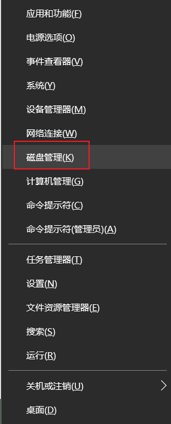
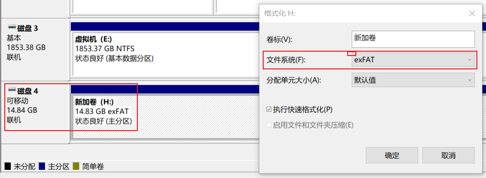
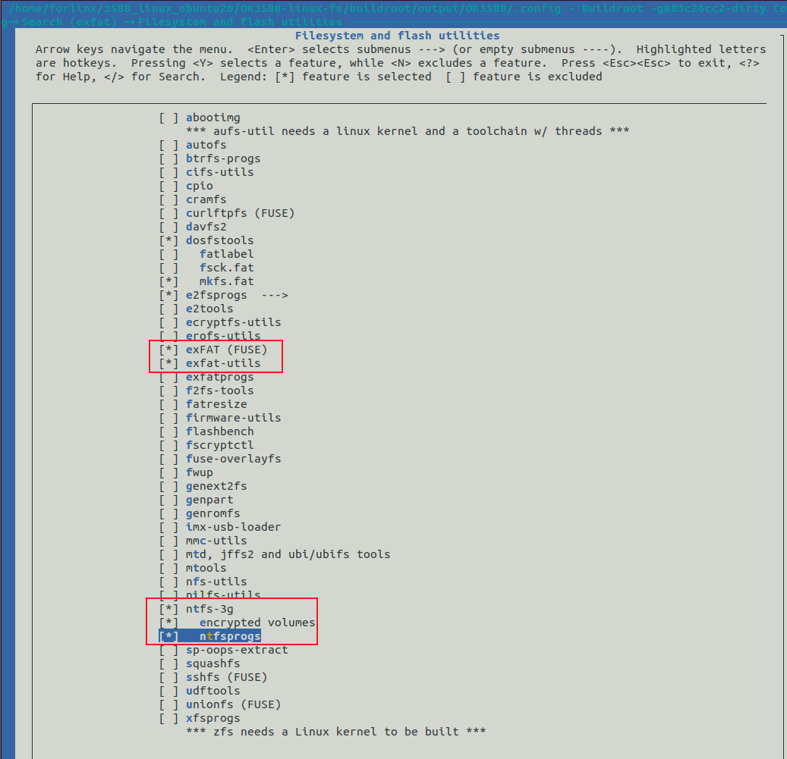
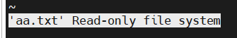

OK3588 5.10.66 Buildroot Adding exFAT and NTFS Formats
Document classification: □ Top secret □ Secret □ Internal information ■ Open
Copyright
The copyright of this manual belongs to Baoding Folinx Embedded Technology Co., Ltd. Without the written permission of our company, no organizations or individuals have the right to copy, distribute, or reproduce any part of this manual in any form, and violators will be held legally responsible.
Forlinx adheres to copyrights of all graphics and texts used in all publications in original or license-free forms.
The drivers and utilities used for the components are subject to the copyrights of the respective manufacturers. The license conditions of the respective manufacturer are to be adhered to. Related license expenses for the operating system and applications should be calculated/declared separately by the related party or its representatives.
Revision History
Date |
Version |
Revision History |
|---|---|---|
09/22/2025 |
V1.0 |
Initial Version |
Adding exFAT and NTFS Formats
In the Linux 5.10 system of the 3588 development board, the mounted TF memory card only has read permission in NTFS format, and cannot be mounted normally in exFAT format.
Use the tools that come with windows to format the storage device into a different file system format.
Shortcut: win + x
Select Disk Management.


Select the partition corresponding to the storage device, right click Format, select the required file system format, and click OK.


Add exFAT and NTFS formats to buildroot system.
Add the following configuration in the buildroot configuration item.


Select to burn rootfs.ext2 to the board separately.
Test
Test the exFAT format.
Check the TF card in exFAT format with the exfatfsck tool.
root@ok3588:/# exfatfsck /dev/mmcblk1p1
exfatfsck 1.3.0
Checking file system on /dev/mmcblk1p1.
WARN: volume was not unmounted cleanly.
File system version 1.0
Sector size 512 bytes
Cluster size 32 KB
Volume size 15 GB
Used space 3296 KB
Available space 15 GB
Totally 1 directories and 2 files.
File system checking finished. No errors found.
ExFAT cannot be mounted automatically. You need to check the node where TF is located.
root@ok3588:/# fdisk -l
Found valid GPT with protective MBR; using GPT
Disk /dev/mmcblk0: 244285440 sectors, 496M
Logical sector size: 512
Disk identifier (GUID): ef6f0000-0000-4e12-8000-415a00002330
Partition table holds up to 128 entries
First usable sector is 34, last usable sector is 244285406
Number Start (sector) End (sector) Size Name
1 16384 24575 4096K uboot
2 24576 32767 4096K misc
3 32768 163839 64.0M boot
4 163840 425983 128M recovery
5 425984 491519 32.0M backup
6 491520 29851647 14.0G rootfs
7 29851648 30113791 128M oem
8 30113792 244285406 102G userdata
Disk /dev/mmcblk1: 15 GB, 15931539456 bytes, 31116288 sectors
1936 cylinders, 255 heads, 63 sectors/track
Units: sectors of 1 * 512 = 512 bytes
Device Boot StartCHS EndCHS StartLBA EndLBA Sectors Size Id Type
/dev/mmcblk1p1 0,130,3 1023,254,63 8192 31116287 31108096 14.8G 7 HPFS/NTFS
Mount
root@ok3588:/run/media# mkdir ss
root@ok3588:/run/media# mount -t exfat /dev/mmcblk1p1 /run/media/ss/
FUSE exfat 1.3.0
WARN: volume was not unmounted cleanly.
After that, you can read and write normally..
Test the NTFS format.
The NTFS format can be mounted automatically, but is a read-only system
root@ok3588:/userdata# df -h
Filesystem Size Used Avail Use% Mounted on
/dev/root 14G 1.2G 13G 9% /
devtmpfs 7.7G 8.0K 7.7G 1% /dev
tmpfs 7.8G 624K 7.8G 1% /tmp
tmpfs 7.8G 580K 7.8G 1% /run
tmpfs 7.8G 0 7.8G 0% /dev/shm
/dev/mmcblk0p8 291M 289M 0 100% /run/media/mmcblk0p8
/dev/mmcblk0p7 128M 12M 110M 10% /run/media/mmcblk0p7
/dev/mmcblk1p1 15G 41M 15G 1% /run/media/mmcblk1p1
root@ok3588:/userdata# fdisk -l
Found valid GPT with protective MBR; using GPT
Disk /dev/mmcblk0: 244285440 sectors, 496M
Logical sector size: 512
Disk identifier (GUID): ef6f0000-0000-4e12-8000-415a00002330
Partition table holds up to 128 entries
First usable sector is 34, last usable sector is 244285406
Number Start (sector) End (sector) Size Name
1 16384 24575 4096K uboot
2 24576 32767 4096K misc
3 32768 163839 64.0M boot
4 163840 425983 128M recovery
5 425984 491519 32.0M backup
6 491520 29851647 14.0G rootfs
7 29851648 30113791 128M oem
8 30113792 244285406 102G userdata
Disk /dev/mmcblk1: 15 GB, 15931539456 bytes, 31116288 sectors
1936 cylinders, 255 heads, 63 sectors/track
Units: sectors of 1 * 512 = 512 bytes
Device Boot StartCHS EndCHS StartLBA EndLBA Sectors Size Id Type
/dev/mmcblk1p1 0,130,3 1023,254,63 8192 31116287 31108096 14.8G 7 HPFS/NTFS


Mount
Since it is already mounted under/run/media/, you need to unmount it first.
umount /dev/mmcblk1p1
Mount the NTFS file system as read-write with the following command.
mount -t ntfs-3g /dev/mmcblk1p1 /run/media/ntfs_fs/
After that, you can read and write normally.
root@ok3588:/run/media# vi aa.txt
root@ok3588:/run/media# sync
root@ok3588:/run/media# cat aa.txt
ceshi_ntfs